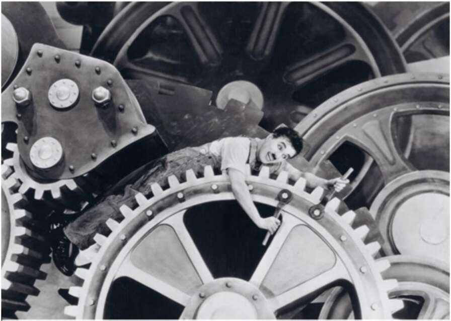

> /a> ’ 42. Charlie Chaplin as a simple worker caught in the wheels of the industrial assembly line, from the film Modern Times (1936). The Industrial Revolution turned the timetable and the assembly line into a template for almost all human activities. Shortly after factories imposed their time frames on human behaviour, schools too adopted precise timetables, followed by hospitals, government offices and grocery stores. Even in places devoid of assembly lines and machines, the timetable became king. If the shift at the factory ends at 5 p.m., the local pub had better be open for business by 5:02. A crucial link in the spreading timetable system was _ public transportation. If workers needed to start their shift by 08:00, the train or bus had to reach the factory gate by 07:55. A few minutes’ delay would lower production and perhaps even lead to the lay-offs of the unfortunate latecomers. In 1784 a carriage service with a published schedule began operating in Britain. Its timetable specified only the hour of departure, not arrival. Back then, each British city and town had its own local time, which could differ from London time by up to half an hour. When it was 12:00 in London, it was perhaps 12:20 in Liverpool and 11:50 in Canterbury. Since there were no telephones, no radio or television, and no fast trains — who could know, and who cared?2
